The year in four phases
-
Idea Formation, March to April
We began by defining the biological problem and testing our original concept. Feedback from Dr. Lin, Prof. Cheng, and Dr. Verslues helped us narrow our focus from a broad PGPR system targeting multiple stresses to a more controlled and testable biological concept towards plants.
-
System Design, April to May
We changed the biological concept into a practical bioreactor system. Prof. Chen’s feedback shifted us toward a controlled bioreactor, whereas Dr. Brophy led us to implement physical containment and membrane-based delivery.
-
System Optimization, June to August
With the overall system design structured, we focused on refining its individual components. We started to interview experts for feedback that lead to improvements to the bioreactor, protectant validation, dosage and delivery, and plant-testing conditions.
-
Real-World Implementation, September
In the final stage, we connected our development to real-world application. We focused on system reliability, farmer usability, regulation, and whether our experiments clearly demonstrated our proposed mechanism.
From our Integrated Human Practices timeline. December to February, before the first phase, went on choosing a project; October and November are still ahead.
December 2025
-
First team meeting
This marks the first time we all met as a team and where our iGEM journey began. At this point, we were strangers to each other and had no project topic.

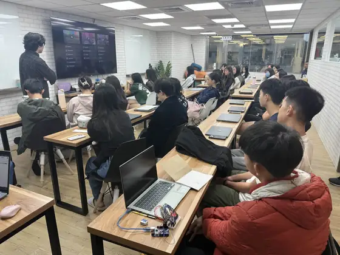
Figure 1. Left: In the photo, our instructor Timmy is giving us a thorough introduction to iGEM. Right: one member had already brought a microcontroller to the first meeting. -
First project proposal
The first project proposal pitched to our team advisors.

Figure 2. The proposal review, in a small meeting room with four advisors.
January and February 2026
-
First Human Practices meeting
The project pitch was put to people outside the team for the first time, in an online meeting.
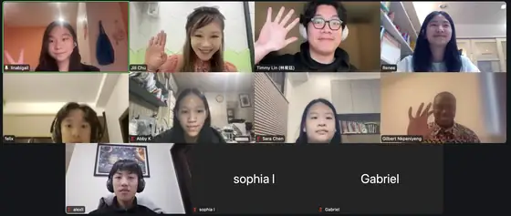
Figure 3. The first Human Practices meeting, held online. -
The first project roadmap
Four parallel tracks, biosecurity, modelling, a stress-response switch and a protectant, each ending in a field test. The hardware that later became half of the project appears on it only as a note to collaborate with the Dry Lab.
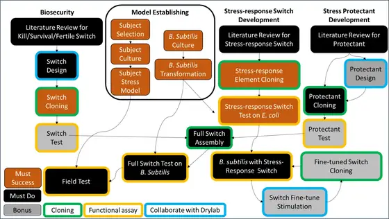
Figure 4. The February roadmap, with every task sorted into must do, must succeed and bonus.
March 2026
-
Lab training begins
The whole team learned the basic lab rules from our Wetlab instructor Chars.

Figure 5. Lab training, before any reagents. -
Interview with Dr. Lin
During our interview with Dr. Lin, we gained valuable insights on Medicago truncatula, PGPR, planting, plant stress, biosecurity, and sought some feedback on our current idea.
-
First outreach: Professor Cheng, National Taiwan University
The team’s first outreach with a professional. At Professor Cheng's molecular biochemistry lab at National Taiwan University, we learned the plant protocols we had been reading about, and left with Arabidopsis seed in a tube.

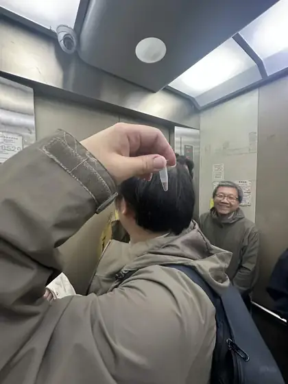
Figure 6. At the growth cabinet, and the seed tube on the way out. 1 more photograph
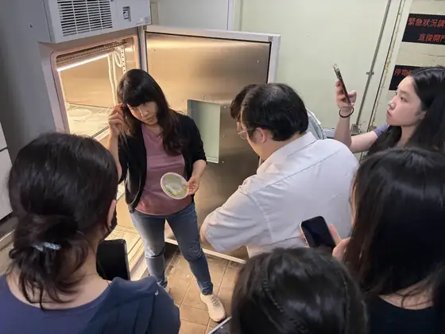
Figure 7. Looking at agar plates of seedlings in Professor Cheng’s lab.
April 2026
-
Dr. Verslues, Academia Sinica
During our meeting with Dr. Verslues, we gained valuable insights into the bacterial aspects of our project. More specifically, he consulted us on the mechanisms of drought and the proline delivery system.
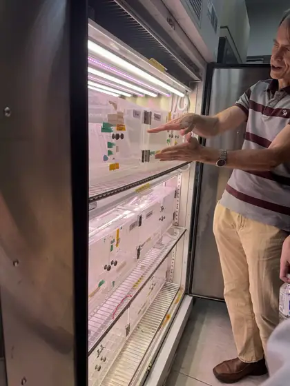
Figure 8. Dr. Verslues showing his vertical plate setup. -
Professor Chen, and the pivot to a bioreactor
In April, the meeting with Prof. Chen, also known as the founder of Agritalk, provided us with feedback that shaped the direction of both our hardware development and business plan, which allowed us to gain more understanding of the strategy for setting up a business plan and advised and suggested us on the hardware design. By 15 April the project had its present shape: stress switches a light, the light activates engineered B. subtilis, and protectants pass through a selective membrane to the plant.
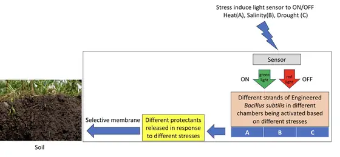
Figure 9. 15 April 2026. The system as first drawn after the pivot: three stresses, three chambers, one membrane, and soil on the far side of it. -
Dr. Brophy, and lab training with Ian
Through this exchange, we received many valuable pieces of advice regarding circuit design for B. subtilis and hardware design. This meeting influenced the direction of our project by highlighting several potential problems of the kill-switch design.

Figure 10. The Wetlab team undergoes lab training with Ian, one of our advisors. -
Drawing the machine
A hollow-fibre membrane cartridge became the core of the device: it holds a dense culture on one side and lets small molecules cross to the other. A pump, a reservoir and a light followed from that choice.
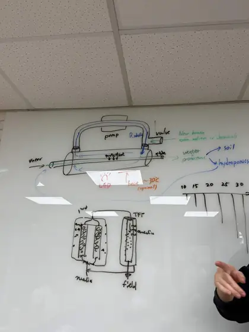
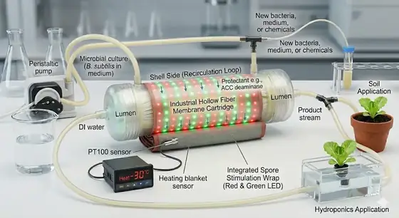
Figure 11. Left: the whiteboard, 25 April. Right: the same design redrawn to explain it outside the team.
May 2026
-
First plants in soil, first hydroponic box
Successful growth of Arabidopsis thaliana in potted soil. Constructing our first hydroponic box prototype.


Figure 12. Left: the first seedlings in soil. Right: parts of the first hydroponic box. 1 more photograph

Figure 13. Abby Tsai pipetting growth medium into seed holders. -
Three ways to grow a plant
A look into the contents of our plant incubator: Arabidopsis grown in agar plates (top shelf), hydroponic boxes (middle shelf), and potted soil (bottom shelf).


Figure 14. Left: the plant incubator. Right, two days later: Joshua Hong holding up a plate of agar with Arabidopsis seedlings. -
Farmers’ event at the Taipei Expo
We attended a farmer’s event at the Taipei Expo to gain insights into what issues farmers really face and whether our project is something they would actually use.

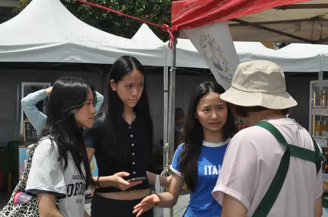

Figure 15. Interviews at the stalls, and the team at the end of the morning. 3 more photographs


Figure 16. More from the same morning. -
World Vegetable Center
Through our meeting with the World Vegetable Center, we gained a better understanding of the challenges faced by smallholder farmers, including climate resilience and the effect of biotic and abiotic stresses on farming.
-
Two instruments we could not buy
Conceptualizing our idea for a spectrophotometer. The photometer and the light plate apparatus were first drawn on 27 May, and the next evening the photometer gave its first readings on a breadboard.

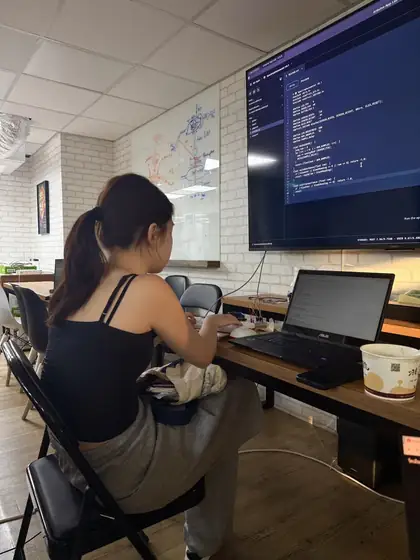
Figure 17. Left: the photometer’s light path on the whiteboard. Right: first light, after school on 28 May. 1 more photograph

Figure 18. (Left to right) Noah Tau, Anton Lin, and Neo Su shopping for materials for hardware. -
Preparing the first lesson
The Human Practices team working on an experiment for an education activity.


Figure 19. Trying out the classroom experiment before taking it to a school.
June 2026
-
The reactor holds a culture
The first B. subtilis growth test in the hollow-fibre loop, sampled alongside flask cultures. The loop did not leak, and the culture in the lumen did not grow like the one in the flask.
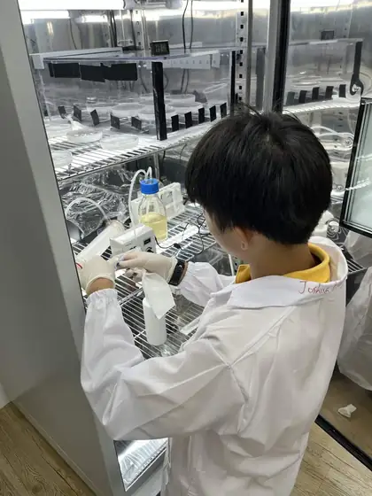
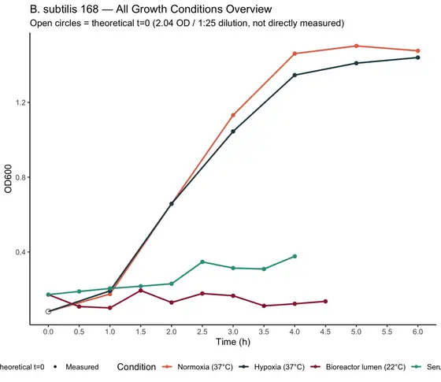
Figure 20. Left: sampling the first growth test. Right: growth under four conditions, including the reactor lumen. -
The whole system on one whiteboard
Reactor, organism, construct, secretion, membrane, diffusion and plant were drawn on one board for the first time, and redrawn on the 19th with the team watching.
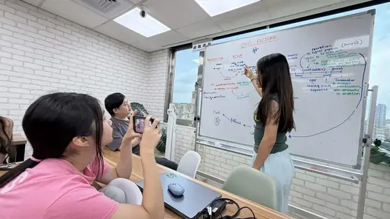
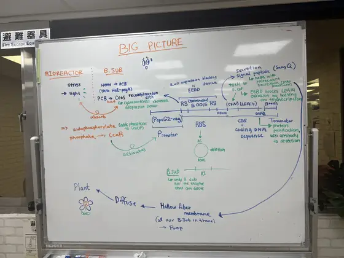
Figure 21. The Big Picture board, being drawn and finished. -
Plates the wrong way round
A set of vertical plates was racked the wrong way, so the seedlings grew across the plate instead of down it, and a trehalose series was lost to contamination the same week.
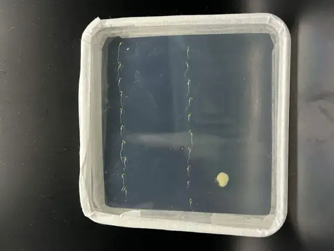
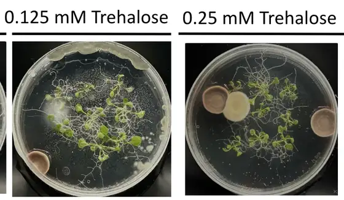
Figure 22. Left: roots growing sideways. Right: the contaminated 0.125 mM and 0.25 mM trehalose plates. -
Professor Chang reviews the bioreactor
In June, Prof. Chang visited our team and discussed our bioreactor design with us while also providing valuable insights for the B. subtilis challenges. The main problem we wanted to consult was the design of our hollow-fiber membrane bioreactor.


Figure 23. Pitching our project to Professor Chang. -
Professor Chen visits
During Prof. Chen’s visit, he provided feedback on different aspects, including the math model, plant model, protectant, hydroponics, gene circuit, and bioreactor.
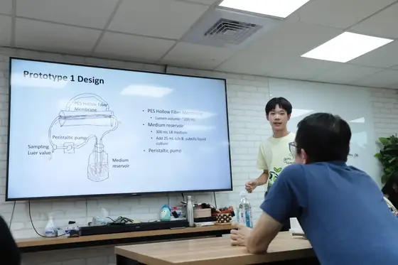

Figure 24. Pitching our project to Professor Chen. 2 more photographs


Figure 25. Protectant delivery and circuit design, presented the same afternoon. -
The first classrooms
This year, our team visited 3 elementary schools spanning over the months of June and July. During these lessons, we delivered an interactive Synbio workshop titled “Little Plant Guardians: Combating Environmental Stress”. Yongping Elementary School on 24 June, Dingxi Elementary School on 25 and 26 June, and the Affiliated Experimental Elementary School of University of Taipei on 29 June.


Figure 26. 24, 25 and 29 June. 3 more photographs
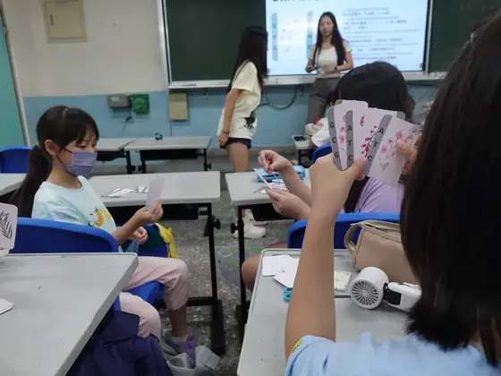


Figure 27. The ATCG card game, and the classes of 25 and 29 June. -
Dr. Sattely, Stanford University
We consulted with Dr. Sattely to evaluate our protectant selection, delivery strategy, and overall project direction.

Figure 28. Pitching our project to Professor Sattely from Stanford University.
July 2026
-
Learning to code the wiki
Advisor Neo Su teaching team members how to code a wiki.

Figure 29. The afternoon this wiki became something a dozen people could write into. -
Berkeley Historical GIS Project
Our GIS group presented the project to Daniel Viragh, creative director of the Berkeley Historical GIS Project, and came away with a method for mapping Taiwan’s farmland.

Figure 30. Renee Kuo (right) presenting our project to Dr. Daniel (left). -
CH Biotech
We consulted with CH Biotech, a company specializing in biostimulants, to better understand the current development, testing, delivery, and commercialization protectants.

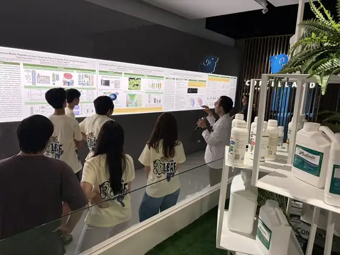

Figure 31. Visiting CH Biotech, one of our stakeholders. Right: a commercial protectant from CH Biotech, back in our lab as a benchmark. 2 more photographs

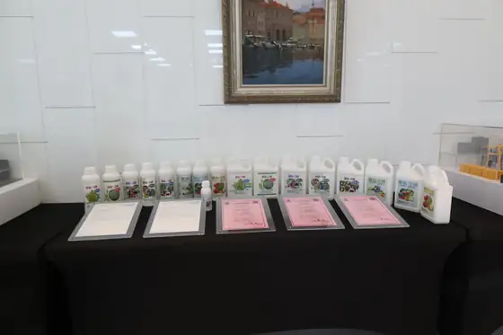
Figure 32. The CH Biotech campus, and its product line laid out in the showroom. -
First live data from the reactor
A pressure sensor on the loop sent live readings to a laptop for the first time. The sawtooth in the trace is the pump.
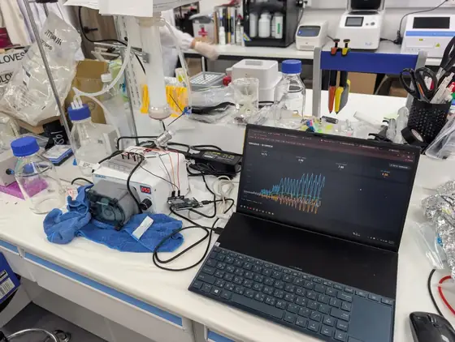
Figure 33. The first live pressure trace. -
Two more classrooms
Our fourth education event. Our fifth education event at Dingxi Elementary School.


Figure 34. 2 July and 14 July. -
The light plate apparatus, assembled
The 3D-printed parts arrived and the light plate apparatus was assembled for the first time, after every LED had been measured and sorted by intensity on 9 July.
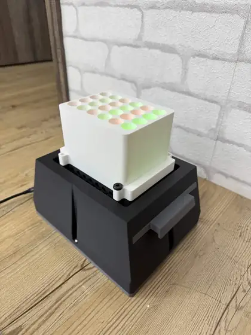
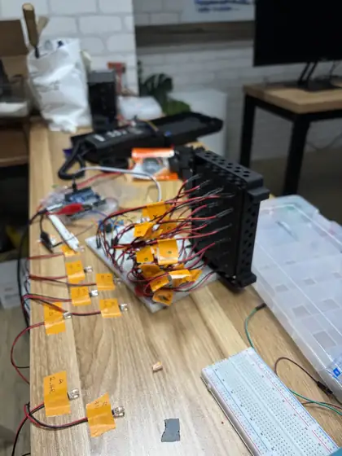
Figure 35. Left: the assembled apparatus, lit. Right: sorting the LEDs, 9 July. -
BIO Asia-Taiwan Exhibition
We visited the BIO Asia-Taiwan Exhibition to gain insights into the latest biotechnology trends and gather new ideas for our project. We also learned that dissolved oxygen monitoring and active aeration/stirring are essential for B. subtilis survival and protein/protectant output, not just passive containment.


Figure 36. At the exhibition. 1 more photograph

Figure 37. Abigail Lin’s mascot design for our wiki. -
The photometer reads live culture
The inline photometer read a live culture in the loop for the first time. Against the Biodrop reference it read about four times too high, which set up the calibration work of August.
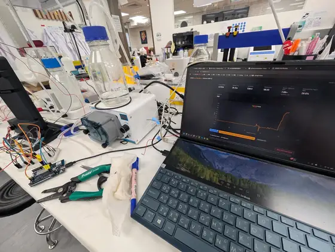
Figure 38. The photometer in the loop, with the live trace on the laptop. -
A day with Farmer Chen
We visited Farmer Chen at the 幸福農莊 to see her natural farming practices and how she would feel about having a bioreactor on her farm.


Figure 39. In the beds, in the kitchen, and the team with Ms. Chen. 2 more photographs


Figure 40. Picking with Ms. Chen before lunch. -
Arabidopsis into soil
Conducting Arabidopsis experiments.


Figure 41. Picking seedlings, and transplanting them into pots. -
Professor Huang, online
We consulted with Prof. Huang to evaluate the timing, dosage, sensing strategy, and application of our protectant-delivery system.

Figure 42. We met online with Professor Huang. -
Live monitoring, and the milestone board
A live monitor of our bioreactor. Writing down the milestones of each team subgroup to sync up progress.


Figure 43. Left: the live monitor. Right: the milestone board.
August 2026
-
One incubator, one system
The bioreactor, the photometer and the plants ran together in one incubator for a long B. subtilis growth test, logged overnight by our own instrument.
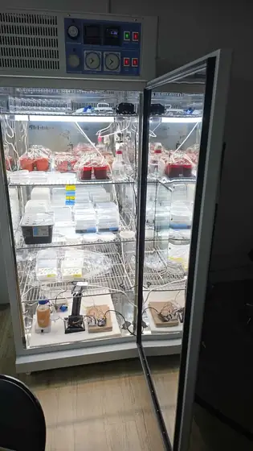
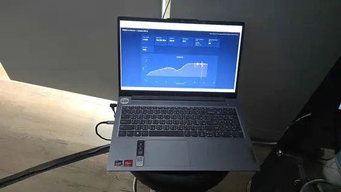
Figure 44. The shared incubator, and the overnight growth curve. -
The promotional video
Filming content for our promotional video. Our full bioreactor setup. The finished video was uploaded on 11 August.


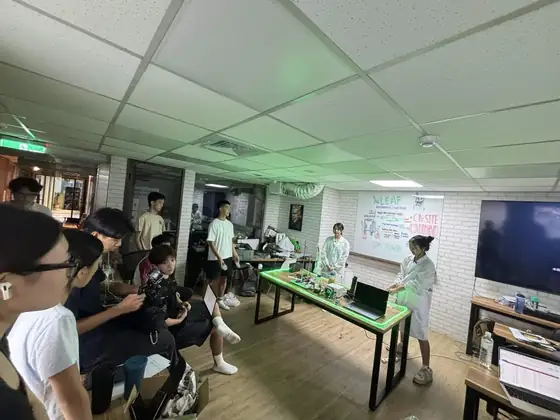
Figure 45. In the park on 4 August, the bioreactor set on 8 August, and the crew behind the camera. 1 more photograph

Figure 46. The hardware members with the set. -
pH and dissolved-oxygen sensors
First tests of pH and dissolved-oxygen sensors for the reactor, following the advice from the BIO Asia-Taiwan Exhibition.
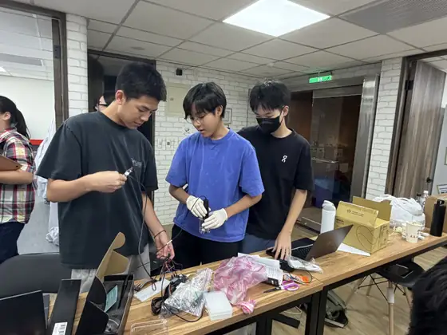
Figure 47. Testing the sensor probes. -
NCHU, and a new chassis
We visited NCHU to pitch our project and ask questions to Professor Huang and Mrs. Huang. We left with a plate of B. subtilis WB800, a protease-deficient strain for secretion.

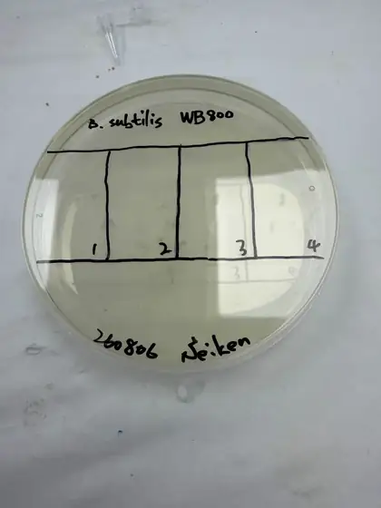
Figure 48. The meeting room at NCHU, and the WB800 plate labelled on the day. 2 more photographs


Figure 49. At the department entrance, and in the life science museum. -
The light plate apparatus, fixed
The light plate apparatus was repaired and lit up again.


Figure 50. Before and after. -
YesHealth iFarm
We visited the YesHealth iFarm hydroponics farm to learn from agricultural professionals. The visit to Yes Health iFarm helped us understand how a highly controlled hydroponic system manages plant growth through environmental monitoring, nutrient management, lighting, aeration, and water circulation.


Figure 51. The growing wall. 2 more photographs
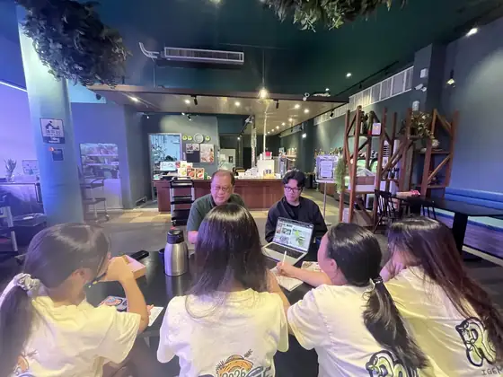

Figure 52. Questions for the farm’s director, and the racks up close. -
Testing the bioreactor
Testing our bioreactor in the lab.


Figure 53. Pressure sensor testing on 13 August, and the setup on 15 August. -
A high school workshop
During August, our team visited 1 high school to expand our educational initiative. In the lesson, we conducted a Synbio workshop titled “Decoding the Genetic Code: From DNA to the Future of Food Security”.
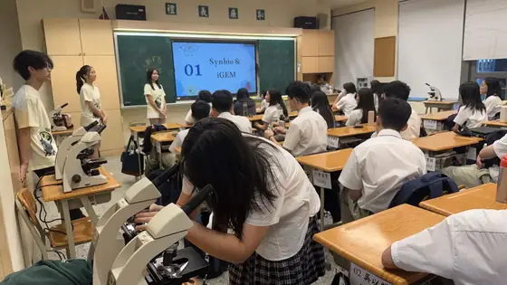

Figure 54. At Fushing High School. -
The model on one sheet
The four stages of the model, sensing and control, production, membrane delivery and soil transport, were laid out on one sheet with the picture above each equation, and the expected plant response was written down before the data.
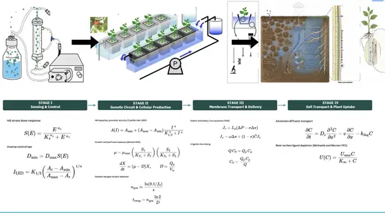
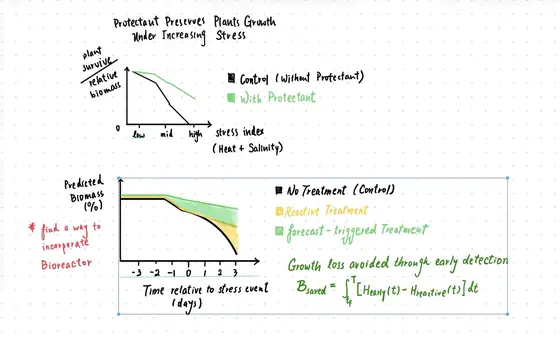
Figure 55. The model overview, and the predicted biomass against stress. -
Safety on record, plants in soil
The lab’s safety equipment was photographed for the safety form. Growing our Arabidopsis in soil.
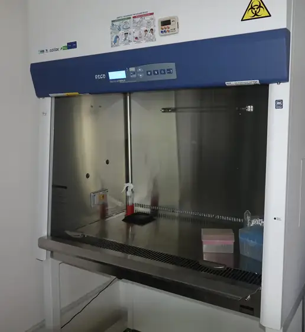

Figure 56. The biological safety cabinet, and staking the soil-grown plants on 23 August. -
The photometer against the Biodrop
The photometer was calibrated against the Biodrop with a titanium dioxide standard, and the reactor began its move into a computer case.
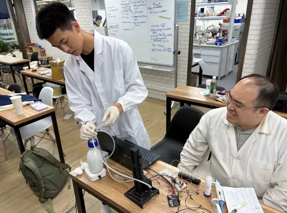
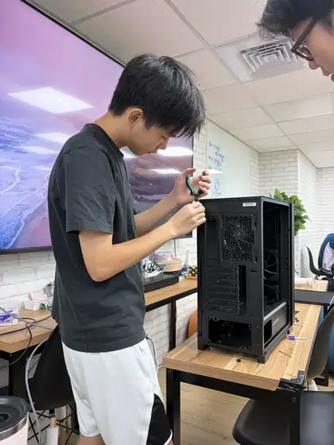
Figure 57. Calibration, and the empty case. -
Second visit to Professor Cheng
During the second visit to Prof. Cheng’s lab, we mainly consulted her with two questions: should the sugar-containing agar covering the Eppendorf tube be removed, and would aeration instead promote faster bacterial growth.


Figure 58. Left: at Professor Cheng’s growth chamber. Our newest hydroponics box prototype, with a 3D-printed floating seed-holder rack. -
Getting ready for the forum
A case to make our bioreactor more compact and transportable. Felix Yu putting together a stress-map of Taiwan for our data physicalization booth at our public forum event.


Figure 59. The case, the stress map, and our project introduction poster for our public forum event. 2 more photographs
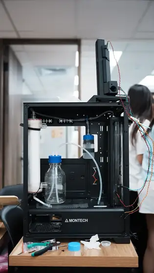
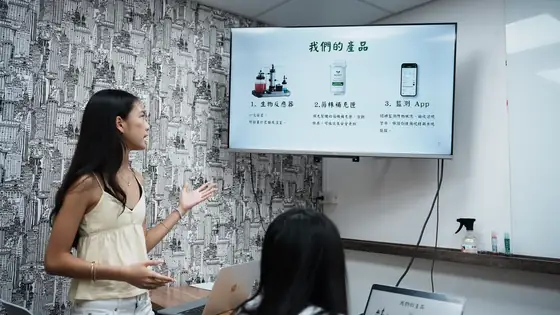
Figure 60. The bioreactor standing in its case, and the first presentation rehearsal.
September 2026
-
The bioreactor in the incubator
Monitoring our bioreactor in our incubator.

Figure 61. The cased bioreactor at work. -
Professor Chang’s second visit
During Prof. Chang’s second visit, we explained the new progress on our bioreactor to him and showed the progress from wetlab, along with some problems we’ve encountered such as protectant/B. sub leaking out from the hollow fiber membrane even without any driving force/action, and the difficulties we’re facing regarding interpreting the data from our recent experiments.
-
Public forum at the Water Garden market
On September 5, 2026, our team organized an event at Taipei Water Garden Organic Farmers' Market. To engage both farmers and the public, we hosted a range of different interactive activities, including a public forum, booth activities, and a plant stress event.


Figure 62. Our public forum event was a huge success. We invited stakeholders, professionals, farmers, and the public to come to our booth and learn about our project. 3 more photographs


Figure 63. The team, the stress map, and the booths in the afternoon. -
Taiwan SMART Agriweek
By visiting the Smart Agriweek Exhibition, we learned that the main demographic that will be interested in our product is young farmers, but it also means that we need to find ways to convince older farmers to also adopt our product.


Figure 64. Left: at the exhibition. Right: Our instructor Chars monitoring our bioreactor. -
A new project poster
Our new project poster.

Figure 65. Presenting the new poster to the team. -
NCHU Symposium
During the NCHU Symposium, we received feedback from different professors. They mentioned that we need a deeper understanding of our experimental data and the ACCD mechanism.
-
Dr. Sattely and Prof. Endy
During our meeting with Dr. Sattely and Prof. Endy, our team gained very valuable insights. They mainly focused on how we present our experimental design, controls, mechanism, and the role of ACCD in our system, and suggested that we should keep the explanation clear.
-
The lab’s safety equipment, photographed
The autoclave, the biological safety cabinet, the chemical hood and the lab coats were photographed for the safety record.
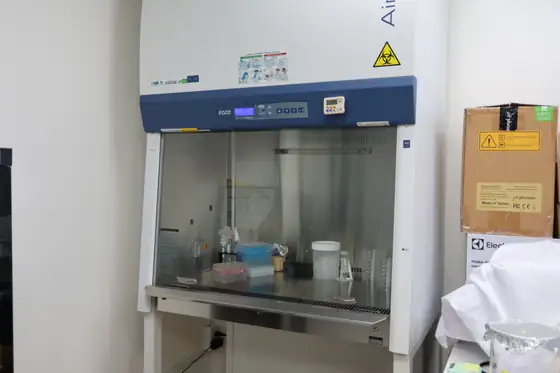
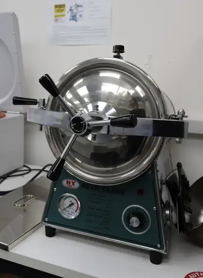
Figure 66. The safety cabinet and the autoclave. 1 more photograph
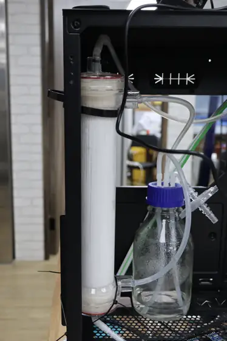
Figure 67. The hollow-fibre membrane column, photographed the same day. -
Follow-up with Ms. Chen
An online follow-up with Ms. Chen, the farmer we visited in July.
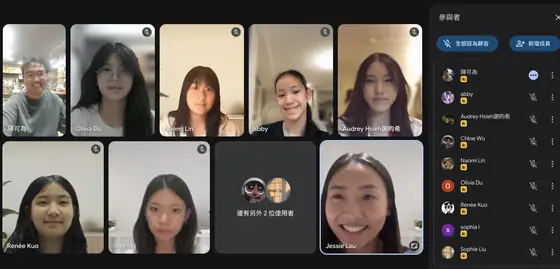
Figure 68. The follow-up call. -
Light-control assay on the light plate apparatus
The first light-control assay on the light plate apparatus, run by the Wet Lab.
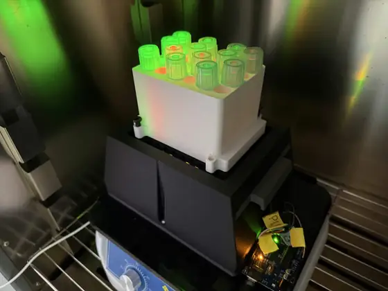
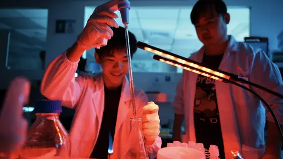
Figure 69. The apparatus in the incubator, and pipetting under a red safelight. 1 more photograph
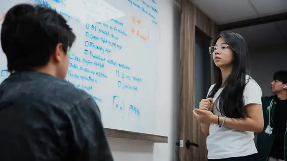
Figure 70. The Dry Lab progress check the same day. -
Plant checks, and laws and regulations
The Wet Lab checked the soil-grown plants and the bacterial cultures through the week, and Human Practices worked through the laws and regulations that apply to ReLeaf.
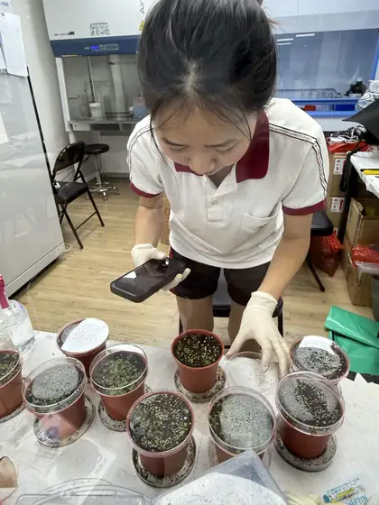
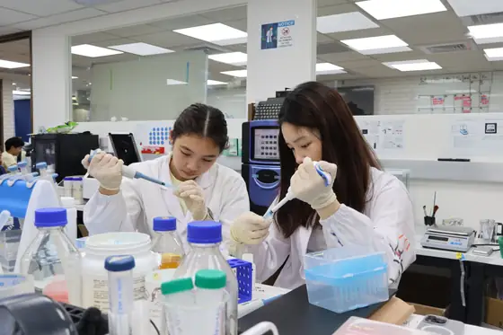
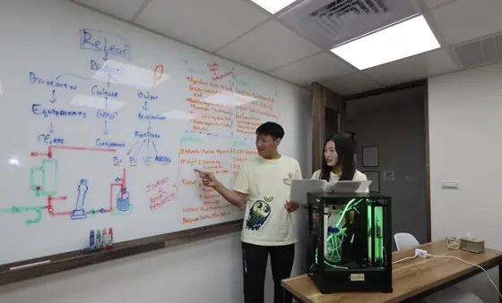
Figure 71. Plant checks on 22 September, bench work on 26 September, and the laws and regulations discussion.
October and November 2026
-
Wiki freeze
Every page of this wiki written, and every image and file moved to iGEM’s servers.
-
Grand Jamboree, Paris
ReLeaf presented to the judges in the Biomanufacturing Village.